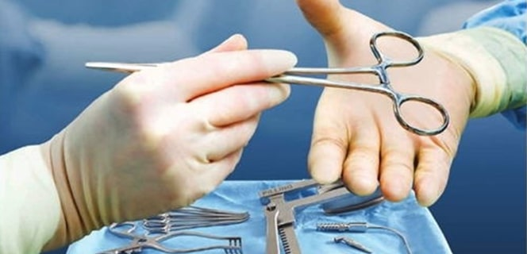
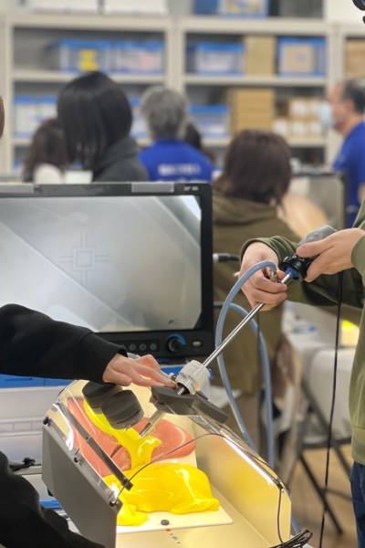
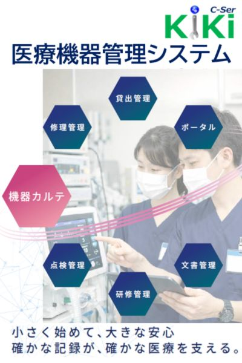
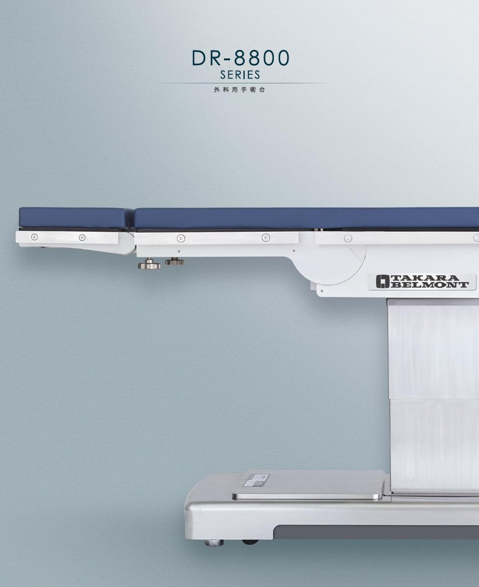

Web Exhibition
協賛企業オンライン展示ブース
臨床の課題を、企業の技術で解決する。
医療技術の高度化に伴い、手術室における臨床工学技士の役割は「機器の点検」から「手術環境全体のマネジメント」へと進化しています。
本展示ブースでは、現場の課題を解決し、私たちと共に「次世代の手術室」を創造する協賛企業の皆様のソリューションをご紹介します。
エア・ウォーター・リンク株式会社

あらゆる可能性をつなぐ総合医療パートナー
総合病院向けの高度な医療機器販売から、滅菌代行サービス、さらには循環器科・心臓血管外科領域の専門機器まで幅広く提供しています。
時にはエア・ウォーターグループのスケールメリットを最大限に活かし、大型医療機器の据付から手術室・ICU等の設計・施工に至るまでトータルでプロデュース。社名である「リンク＝つなげる」の通り、専門性と柔軟性を兼ね備え、医療現場の安全と安心を総合的に支えます。
- 循環器・心臓血管外科領域における専門性の高い医療機器の提供
- グループの総合力を活かした手術室・ICU等の大規模な設計・施工
- 医療機器の販売から滅菌代行まで、安全を支えるトータルサポート

イービーエム株式会社

手技の「質」を高め、CEの職能向上を牽引する
高度な生体再現性を持つ血管モデルと、心拍動下での吻合訓練を可能にするシミュレータを提供し、臨床現場に出る前の「質の高い反復練習」を実現します。
特筆すべきは、臨床工学技士の「告示研修」で使用されるシミュレータを全て同社が手掛けているという点です。私たちの職能拡大と技術向上に最も深く関わり、チーム医療におけるCEの存在価値を高める強力なパートナー企業です。
- 臨床工学技士「告示研修」のシミュレータを全面プロデュース
- ヒト組織の弾性・粘性を極限まで再現した血管モデル「YOUCAN」
- 手技評価の客観化を可能にする拍動シミュレータ「BEAT」

ASP Japan合同会社

高度な低温滅菌ソリューションで手術室と中材の安全を統括する
低温滅菌分野の世界的リーダーとして、手術室および中央材料室（CSSD）における確実な感染対策と現場の業務効率化を支援するソリューションを提供しています。
同社の代名詞である過酸化水素ガスプラズマ滅菌システム（ステラッド™）は、精密医療機器や軟性・硬性内視鏡関連機器など、熱や高湿環境に適さない最先端器材の安全かつ迅速な再生処理に不可欠な存在。厳格なトレーサビリティと標準化を高い次元で両立し、周術期医療の質向上と、医療スタッフの安全文化醸成を全方位から支え続けています。
- 先進的な過酸化水素ガスプラズマ滅菌技術による精密器材・内視鏡の安全な再生
- 中央材料室（CSSD）での洗浄・消毒・滅菌工程の標準化と確実なトレーサビリティの確立
- 医療機関全体のワークフロー改善、およびスタッフ向けの包括的な感染制御教育支援

コスモスシステム株式会社

地域の医療を支える、柔軟な機器管理システム
地元・三重県津市に拠点を置くコスモスシステム株式会社は、医療機関の「持続的な医療機器管理体制の構築」をシステム面から強力にサポートしています。
主力製品である医療機器管理システム「C-SerKiKi（シーサー・キキ）」は、専用サーバを必要としないクラウド型Webアプリケーションです。機器の所在をリアルタイムに可視化し、小規模クリニックから総合病院まで、施設ごとの運用に寄り添ったミニマム構成からの導入が可能です。
- 初期費用を抑え、必要機能だけを選べるミニマム構成導入
- 修理記録の一元管理と、機器の所在のリアルタイム可視化
- 監査対応に必要な情報をスムーズに抽出・統合管理

タカラベルモント株式会社

術者の疲労を軽減する、人間工学に基づいた手術台
理美容分野で培われた「人が人をケアする空間」のノウハウ。その究極の人間工学（エルゴノミクス）に基づく設計思想と、過酷な医療現場のニーズに応える高い耐久性を融合させたのがタカラベルモントの手術台です。
術者の疲労を極限まで軽減し、長時間のオペにおける手術精度を力強くサポート。アクセサリーも豊富であり、各診療科目の特性に合わせて最適化された機能美が、チーム医療のポテンシャルを最大限に引き出します。
- 理美容分野で培われた極めて高い人間工学（エルゴノミクス）設計
- 過酷な医療現場のニーズに応える、卓越した耐久性と安定性
- 各診療科の術式に最適化され、術者の疲労軽減と高い精度をサポート

テルモ株式会社

血管内治療の、新たな標準
低侵襲治療の最前線を走るステントグラフトや人工血管。周術期管理においてCEが直面する多彩な症例に対し、確かな品質と豊富なラインナップで寄り添い続けます。
- 高度な追従性と長期成績を実現する次世代ステントグラフト
- 耐久性と操作性を両立した高度な人工血管
- 手技時間の短縮と患者様の術後早期回復への貢献
Vascular Intervention
ニプロ株式会社

医療従事者の、安全を守る
手術室での針刺し・切創事故ゼロを目指すSandel（サンデル）安全製品ラインを提供。スタッフの安全を守ることが、質の高いチーム医療の確固たる土台となります。
- 鋭利器具の受け渡しを非接触で行うトランスファートレー
- 長時間の立ち作業の疲労を軽減するエルゴノミクスマット
- 医療現場のヒューマンエラーを防ぐ物理的な安全対策
Safety & Ergonomics
三重金属工業

臨床工学技士の声をカタチにする医工連携ブランド
高度な精密金属加工技術をベースに、医工連携によって医療・介護現場のリアルな課題を解決する自社ブランド「WILLMIE（ウィルミー）」を展開しています。
製品開発には、臨床工学技士の意見をダイレクトに反映。ドレインバッグホルダーやアンギオ検査台用心臓マッサージボードなど、現場の「あったらいいな」を確かな品質でカタチにし、安全で効率的なチーム医療の環境を根底から支えます。
- 医療・介護現場の課題を解決する自社ブランド「WILLMIE」の展開
- ドレインバッグホルダーなど、CEのアイデアをダイレクトに反映
- 精密な金属加工技術と医工連携による、安全性・利便性を追求した製品開発
Medical-Engineering Collaboration